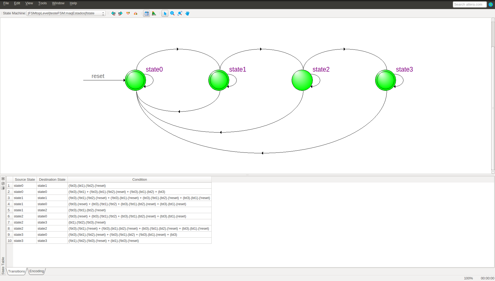

A criação de uma máquina de estado segue os passos:
Deverá abrir a seguinte tela:

Para criar as entradas e saídas da FSM, utilize as tabelas Input Table e Output Table. Clique com o botão direito do mouse na região não utilizada da tabela desejada:

Podem ser criadas entradas/saídas individuais ou vetores. Note que a representação de vetor utiliza a sintaxe: nome[inicio:fim] ou nome[fim:inicio].

Note que os nomes e tipos utilizados para os sinais de entrada e saída devem ser os mesmos utilizados na instanciação do componente.
Para criar os estados da FSM, utilize a ferramenta State Tool:

Para criar as transições entre os estados da FSM, utilize a ferramenta State Tool:
A edição das características da FSM é feita através do State Machine Wizard:

As características da FSM são configuradas através das abas do assistente e com o botão direito do mouse. As características gerais são mostradas abaixo:


Para definir as transições, temos os valores de entrada e as seguintes operações:
| Símbolo | Comparação |
|---|---|
| "==" | EQUAL |
| "!=" | INEQUAL |
| "<=" | LESSER THAN |
| "<" | LESSER |
| ">=" | GREATER THAN |
| ">" | GREATER |
| Símbolo | Operação Lógica |
|---|---|
| "&" | AND |
| "|" | OR |
| "^" | XOR |
| "~&" | NAND |
| "~|" | NOR |
| "~^" | XNOR |
| "~" | NOT |
O valor de saída aceita números decimais inteiros.
O resultado da edição é atualizado para o grafo da máquina de estados:
Para gerar o código HDL referente a essa FSM, utiliza-se o botão Generate HDL File:

E deve-se escolher a linguagem desejada. No nosso caso: VHDL.

Será criado um arquivo com o código VHDL referente à FSM definida anteriormente. Esse arquivo deve ser adicionado ao projeto.

Para verificar os detalhes da implementação, como a tabela de transição gerada ou a codificação dos estado, utilize o State Machine Viewer.
Ele está no menu: Tools > Net List Viewers > State Machine Viewer.
Transições: 
Codificação: 
Note que os estados são representados de duas formas: